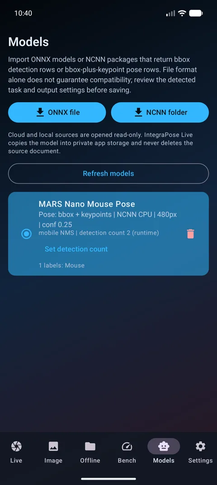
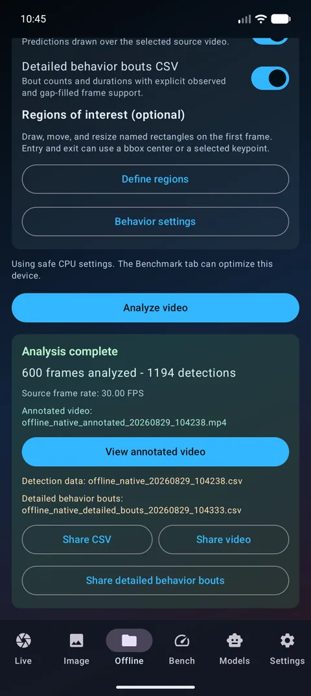
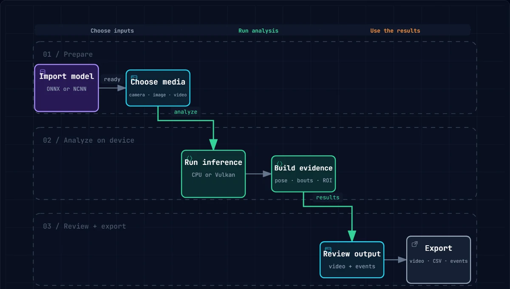

Prepare the experiment
Import a compatible model, review its settings, and choose a live camera, still image, or prerecorded video.
Private Mobile Inference
Turn a compatible Android™ device into an on-device workspace for live keypoint estimation, annotated video, behavior bouts, and region-of-interest analytics.


Related publication: Augustine, F., O’Sullivan, S., Murray, V., Ogura, T., Lin, W., & Singer, H. S. (2025). IntegraPose: A unified framework for simultaneous pose estimation and behavior classification. Neuroscience, 590, 1–22. https://doi.org/10.1016/j.neuroscience.2025.10.020
Citations identify source material or related scholarship only. They do not imply endorsement of IntegraPose Live by the cited authors, institutions, repositories, or publishers.
One continuous workflow
Prepare your model and media, run analysis on the Android device, and leave with outputs you can inspect, measure, and share.

Explore the interactive workflow ↗Import a compatible model, review its settings, and choose a live camera, still image, or prerecorded video.
Run detection, pose, behavior, tracking, and optional ROI analysis with CPU or Vulkan execution.
Review visible annotations and export video, frame-level data, behavior bouts, and ROI visits.
See it in action
Track social interactions, estimate detailed pose, identify behavioral bouts, and follow movement under challenging lighting—all with the same private, on-device workflow.
Source video: Segalin, C., Williams, J., Karigo, T., Hui, M., Zelikowski, M., Sun, J. J., Perona, P., Anderson, D. J., & Kennedy, A. (2021). The Mouse Action Recognition System (MARS): behavior annotation data (Version 1.0) [Dataset]. CaltechDATA. https://doi.org/10.22002/D1.2012
Source video: Kumar, V., Geuther, B., & Deats, S. (2024). The Jackson Laboratory (JAX) – Kumar Lab Mouse Strain Survey of Behavior in the Open Field Arena (Video Dataset). Harvard Dataverse. https://doi.org/10.7910/DVN/SAPNJG
Related publication: Augustine, F., O’Sullivan, S., Murray, V., Ogura, T., Lin, W., & Singer, H. S. (2025). IntegraPose: A unified framework for simultaneous pose estimation and behavior classification. Neuroscience, 590, 1–22. https://doi.org/10.1016/j.neuroscience.2025.10.020
Citation is for attribution and scientific context only; it does not imply endorsement by any cited author, institution, repository, or publisher.
Dataset and publication citations provide attribution and research context only. No endorsement of IntegraPose Live by the cited authors, institutions, repositories, or publishers is implied.
From movement to events
Draw a named region on the first frame, keep its boundary visible in the annotated video, and export qualified entries, exits, and dwell intervals by track.
Give each region a meaningful name and keep its boundary aligned throughout the analysis.
Source video: Kumar, V., Geuther, B., & Deats, S. (2024). The Jackson Laboratory (JAX) – Kumar Lab Mouse Strain Survey of Behavior in the Open Field Arena (Video Dataset). Harvard Dataverse. https://doi.org/10.7910/DVN/SAPNJG
Source video: Kumar, V., Geuther, B., & Deats, S. (2024). The Jackson Laboratory (JAX) – Kumar Lab Mouse Strain Survey of Behavior in the Open Field Arena (Video Dataset). Harvard Dataverse. https://doi.org/10.7910/DVN/SAPNJG
Entry and exit thresholds smooth boundary crossings, so brief edge noise does not become a false visit.
The source-dataset citation is included for attribution only. It does not imply endorsement of IntegraPose Live by the cited authors, institutions, or repository.
Local by design
Models and videos are copied into private app storage for local analysis. Nothing leaves the device unless you choose to share an output.

Bring a compatible model, choose your media, and turn experimental video into analysis-ready evidence.